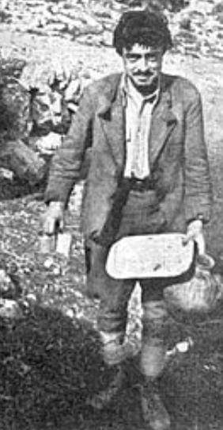

George was a member of the Greek Resistance on Crete during the Second World War and after the war an author.
Following the German invasion, between 1941 and 1945, he served as a despatch runner for the Special Operations
Executive (SOE) operations on Crete, as part of the Cretan resistance. During the postwar years he was at first
mistakenly imprisoned as a deserter. While in prison he wrote his wartime memoirs, which were published as The
Cretan Runner. Later he translated key classical Greek texts into the Cretan dialect.
He had been a shepherd before the war and after it a charcoal burner and later caretaker of a German military
cemetery on Crete.
Early life
George Psychoundakis was born in Asi Gonia (Greek: Ασή Γωνιά), a village of a few hundred people high in the
Mouselas valley in western Crete. The village was not serviced by a road until the 1950s. He was the penultimate son
of Nicolas and Angeliké, one of the poorest families in the village. They lived in a one-roomed home with an earth
floor. After a minimum of tuition in the village school, he became a shepherd, tending his family's few sheep and
goats. He developed an intimate knowledge of his part of the island.
During the Second World War, people used the caves to live in and to store weapons. They traveled the goat tracks to
carry messages, goods and people. Crete had a tradition of resistance to rule by outsiders; the island had, about 40
years previously in 1898, obtained its independence from the Ottoman Empire. Numerous insurrections during the long
occupation, together with the mountainous terrain, helped maintain an independence of character and willingness to
bear and use arms.

War-time service
As an airborne Nazi invasion began on 20 May 1941, Psychoundakis immediately went to the nearest town
(Episkopi, Rethymno) about 15 km away. He took part in an ill-armed resistance to the invasion. The Cretans hid
many hundreds of British and allied forces left behind, and the resistance organised their movement to the south
coast. From there the British were shipped to Egypt. Psychoundakis helped in guiding groups from village to
village. By the autumn of 1941, SOE were beginning to organise with British liaison officers on the island, one
of whom was Patrick Leigh Fermor. He arrived clandestinely by sea in July 1942. Psychoundakis acted as Fermor's
runner, carrying messages between resistance groups and guiding parties unfamiliar with the territory.The Cre…